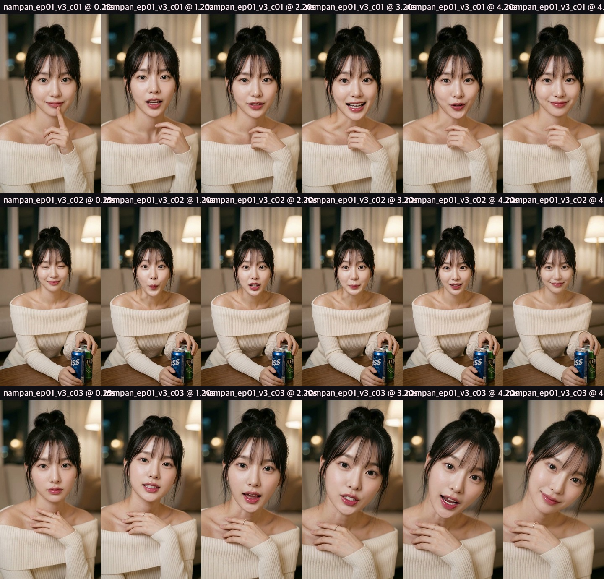
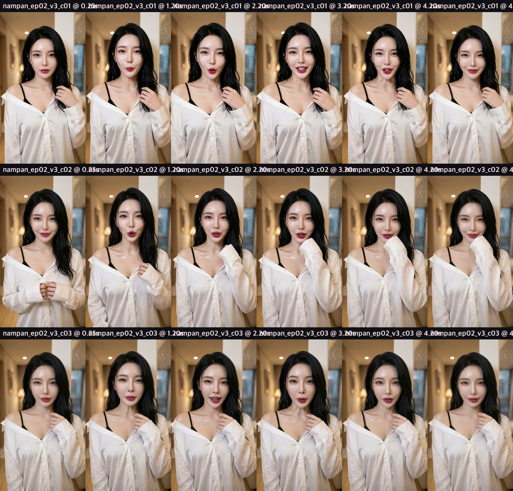
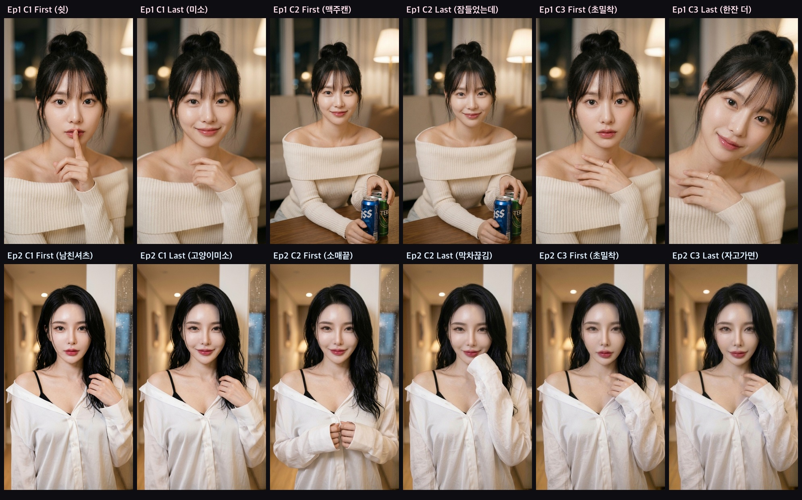

남판 (남자들의 판타지) — Ep.01 & Ep.02 v3 리메이크 검수
H3 20-Step Native 한국어 보이스 · 1편 Type A (설윤·장원영급 인형상) + 2편 Type B (카리나·한소희급 고양이상) · 발음 교정 완료
1. Ep.01 친구 여동생편 (Type A 인형상 여신 · 14.1초)
반영 완료
- 비주얼: Type A 초단축 중안부 · 오똑한 코 · 왕방울 눈망울 · 크림 오프숄더 니트 (3컷 동일 얼굴 100% 고정)
- 발음 교정 (Cut 2): 기존 «뻗었는데(뻐졌는데)» → «우리 오빠 술 취해서 벌써 잠들었는데…» (Whisper STT 100% 정확 인식)
- 대사 구성: Cut 1 «쉿… 오빠, 아직 안 잤죠?» → Cut 2 «우리 오빠 술 취해서 벌써 잠들었는데…» → Cut 3 «심심한데… 내 방 가서 둘이 한잔 더 할래요?»
Ep.01 버전 A — 로맨스 어쿠스틱 BGM (자막본)
⬇ MP4 다운로드 (ep01_A_sub.mp4)Ep.01 버전 B — 심야 네오소울 BGM (자막본)
⬇ MP4 다운로드 (ep01_B_sub.mp4)Ep.01 무자막 클린본 (로맨스 어쿠스틱)
⬇ MP4 다운로드 (ep01_A_clean.mp4)2. Ep.02 남친셔츠 후배편 (Type B 치명적 고양이상 여신 · 13.8초)
반영 완료
- 비주얼: Type B 눈물점 · 매혹적인 고양이 눈매 · 뽀얀 우유빛 피부 · 비에 젖은 흑발 + 한쪽 어깨로 흘러내린 화이트 실크 남친셔츠 & 블랙 스트랩
- 대사 구성: Cut 1 «선배… 옷이 이것뿐이라 그냥 입었어요» → Cut 2 «밖에 비도 너무 오고… 막차도 끊겼는데» → Cut 3 «오늘만… 여기서 자고 가면 안 돼요?»
Ep.02 버전 A — 로맨스 고백 테마 BGM (자막본)
⬇ MP4 다운로드 (ep02_A_sub.mp4)Ep.02 버전 B — 빗소리 로즈 피아노 BGM (자막본)
⬇ MP4 다운로드 (ep02_B_sub.mp4)Ep.02 무자막 클린본 (로맨스 고백 테마)
⬇ MP4 다운로드 (ep02_A_clean.mp4)3. 컷별 프레임 & 키프레임 보드
Ep.01 (Type A) 20-Step 렌더링 프레임 보드

Ep.02 (Type B) 20-Step 렌더링 프레임 보드

Ep.01 & Ep.02 키프레임 12종 원본
